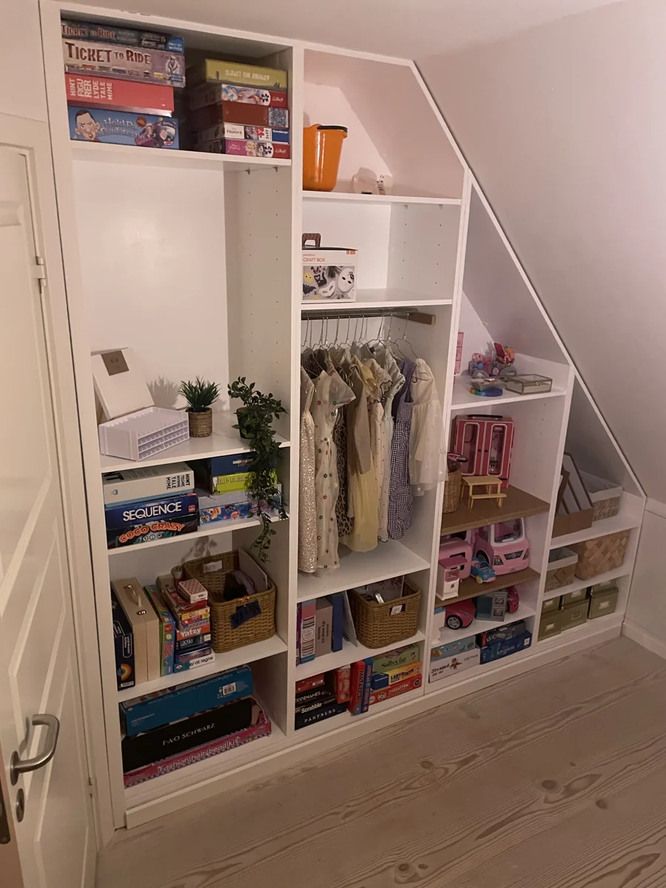
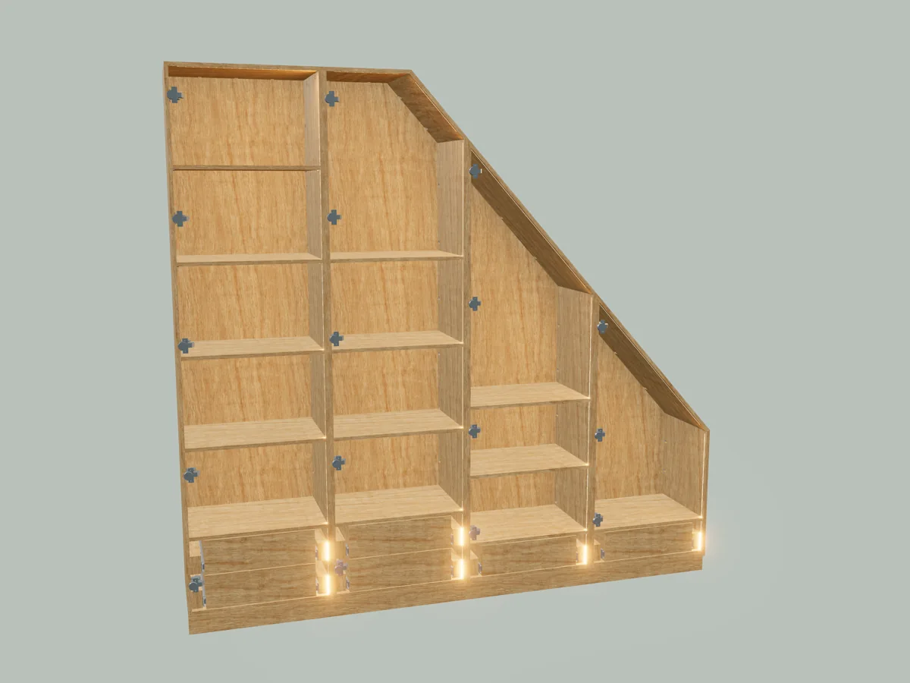

A real build. A skill for your AI.
Your space.
Your wardrobe.
Your AI.
Give your AI agent the instructions to design a fitted wardrobe for your room.
Free for personal use. Your AI application may require a paid plan.

From an awkward nook to a real wardrobe
It started with
too many toys.
I needed a wardrobe for my daughter's room. I didn't know how to design one. So I worked through AI to create the 3D models and the files for a CNC.


Then it had
to fit.
The parts were cut at Maker in Copenhagen. I assembled and painted them at home. The wardrobe in the photo is the result.
I turned the tools and instructions into WardrobeAgentWizard so other people could try it with their own AI.
Try your own spaceLook inside the design
A design you
can inspect.
Rotate a detailed example, separate the panels and zoom in on the machining.
Open the 3D viewerA separate digital example. Proposed finishes and fittings are explained in the viewer.

Explore the modelKeep working with your own AI
Give your agent
a new skill.
Start a fresh chat with the prompt below. Your agent follows the setup instructions, then guides you through your room and design.
Start your wardrobe
Inside your AI agentUse an AI work environment that can download files and run commands. It may ask you to approve setup or folder access.
The desktop link fills a new chat. Press Send to begin. For Claude Cowork, Codex or another compatible agent, copy and paste the prompt.
Read or select the starter prompt
Setup currently supports macOS Apple Silicon and Linux x86-64, including hosted workspaces. Native Windows isn't supported. Allow about 4 GB free plus project space.
Setup details and current limitationsBefore you start
What will the skill create?
The workflow covers measured-space intake, 3D design, part files, supported hardware machining and cutting information. Your agent works through checks and asks for missing measurements or workshop information. A picture alone is not a manufacturing release.
Do I need a CNC at home?
No. You need a workshop or supplier that can cut the parts. My build used the CNC at Maker in Copenhagen. Your machine, materials and manufacturing files must be checked before cutting.
Is it free?
The skill is free for personal, noncommercial projects. Your AI subscription, materials, hardware and workshop time are separate. Commercial use requires a separate licence.
Can I look at the code?
Yes. The instructions and construction tools are in the GitHub repository. Technical users can start there directly.